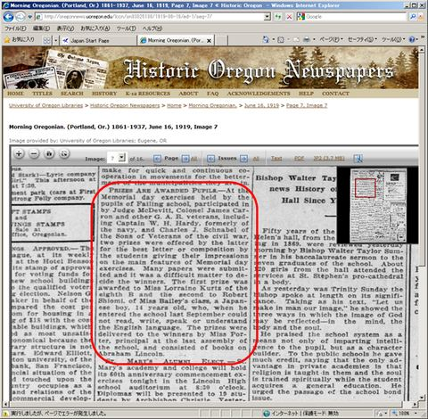
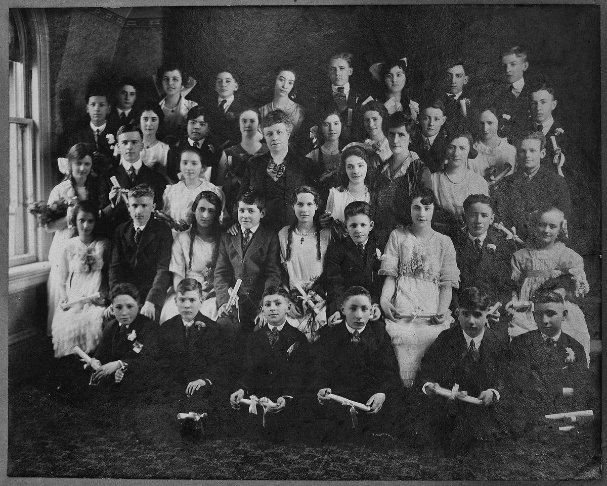

アメリカ日系一世 ロバート汐見の足跡（2）
汐見一、13歳で単身海を渡る
汐見一は、佐島出身の父佐市と三原出身の母マンとの次男として1904年（明治37）10月1日に誕生した。1902年生まれの長男一郎との2人兄弟であった。
父佐市が渡米した10年後、弱冠13歳で単身横浜からシアトル行きの「しかご丸」に乗り、19日間の船旅の後1918年(大正7)6月10日、アメリカに入国した（写真１）。まだ電気も来ていなかった佐島から出て、ビルの立ち並ぶシアトルを目の当たりにしたはずである。
乗船者は広島、滋賀出身が目立つが、静岡、鹿児島、宮城と多彩である。
ちなみに「しかご丸」は1910年(明治43)の建造。当時は香港～シアトル/タコマ港経路で、途中神戸や横浜に寄港していた。中国人移民が禁止により大幅に減り、日本人の移民も制限が掛かりながらもまだ増えていた頃であろう。1920年以降はブラジル航路に変更されて多数のブラジル移民を運んだ。その後、二次大戦で陸軍に徴用され1943年10月に台湾沖で米潜水艦の雷撃により沈没したという*。
一は英語名をロバートとしてFailing Elementary Schoolに入学した。ポートランド市第4代市長にして実業家であったJosiah Failing氏が設立した名門校と言う事である**。入学して9か月後の6月16日付け地元紙オレゴニアンにロバートの記事が載っており、Memorial day記念の感想文コンテストにおいてthe best letter or compositionを受賞したとある。（写真2）ABCも判らない息子をいきなり現地校に入れた父、佐市はなかなかのスパルタ主義だったようだが、ロバートもよく頑張ったものである。

「Second (prize) to Robert Shiomi, a Japanese boy, 14 years old, who, when he entered the school last September could not read, write, speak or understand the English language.」
昨年、汐見の家の屋根裏で1920年1月付けの卒業写真が見つかった。（写真3）身なりの良い白人少年少女40余名の中にただ一人アジア人の少年が口を結んで写っている。家を守る母、マンに送ったものだろう。ロバートは後から2列目、左から3人目と思われる。

*しかご丸
しかご丸の船歴（ 大日本帝國海軍 特設艦船DATA BASE より）
**フェイリング・スクール
建物は現在も保存され、 Portland Community College（PCC） として使われている。